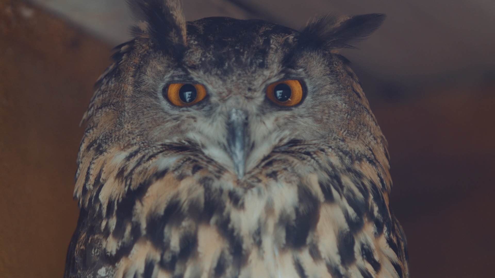

¿Qué es un búho?
Los búhos (Strigiforme) son aves que se conocen por su alta inteligencia y su mirada penetrante, al igual que su curiosa capacidad de girar su cabeza 270° grados. Estas aves estan asociadas por muchas culturas con la sabiduría y la intuicion, aunque tambien han llegado a asociarse a la muerte y la desgracia por su relacion con la noche no son aves migratorias, por lo que pueden pasar su vida aproximada de 20 años en un mismo territorio, vale tambien mencionar, que aun que tiendan a ser de un tamaño reducido, estos cazadores nocturnos son peligrosos si son amenazados aunque no son conocidos por atacar humanos sin provocacion, por lo que es mejor mantener las distancias.

Fuentes Adicionales
Caracteristicas Basicas
Los Búhos son rapazes, lo que significa que cazan a otros animales para alimentarse pero no son carroñeros. Tienen habitos nocturnos, pueden permanecer despiertos durante la noche este hecho les a ganado fama al ser utilizados como el animal de eleccion para dar ambiente a una escena nocturna. Tambien son animales solitarios, prefieren cazar su propia comida y construir sus nidos en lugares donde no llegue la luz para ocultarse de depredadores Estas aves, tienden a pasar toda la noche despiertos en busca de presa y vigilando sus alrededores y tienden a ocultarse o dormir durante el día.
Para más informacion
Si quieres saber mas a detalle acerca de estos curiosos agentes de la noche, visita nuestra seccion de detalles en el tope de la pagina
Subir al principio